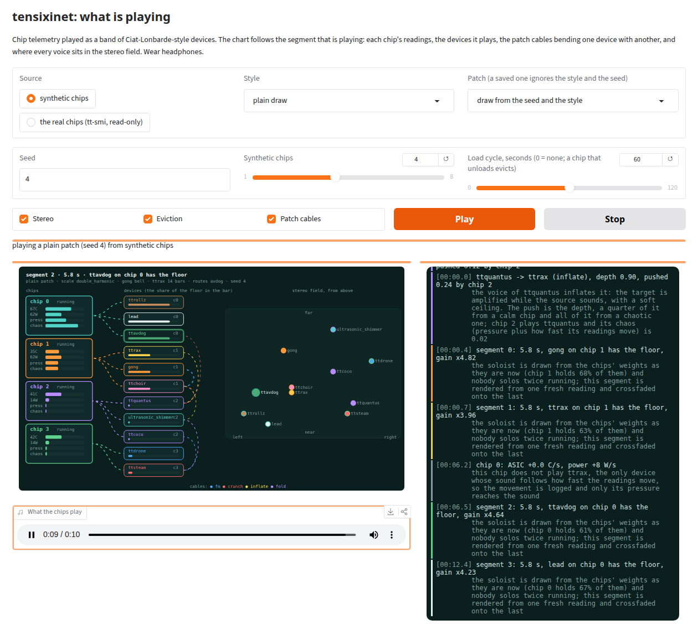
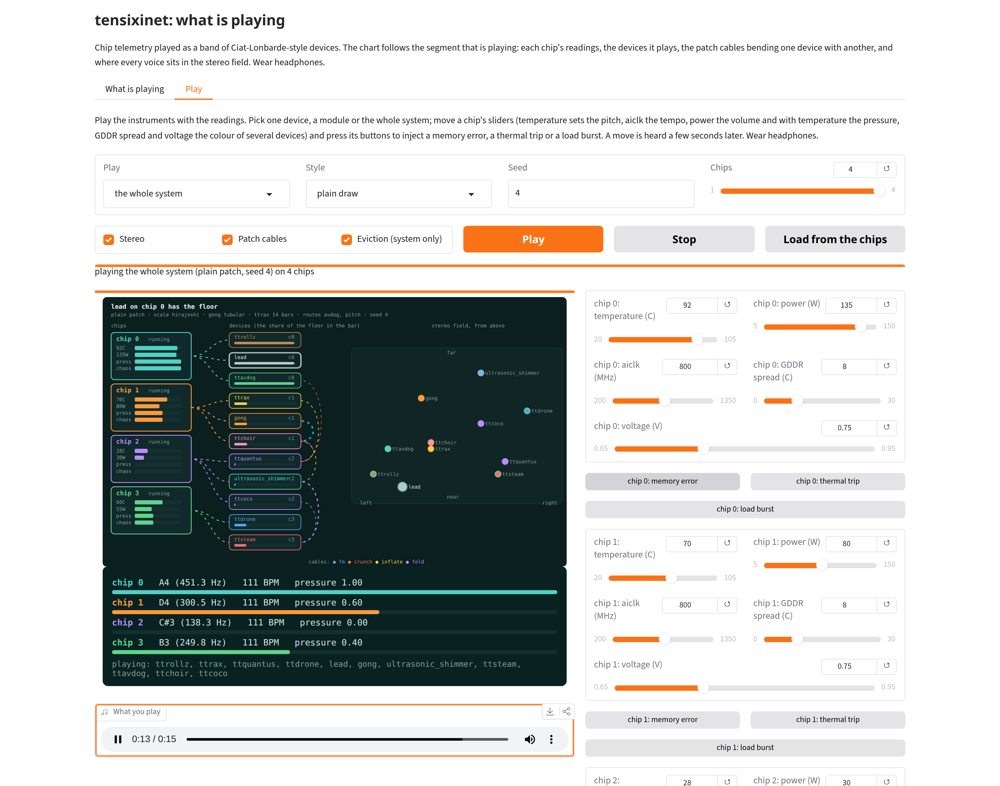

Every Tenstorrent chip reports its temperature, clock, power, memory heat, links and errors. tensixinet patches those readings into a band of synthesizers inspired by the instruments of Ciat-Lonbarde, and wires the voices together with cross-modulation cables. The machine plays itself, and what it plays changes with the work it is doing.
Listen See the signal paths Source on GitHub
The soundtrack made on four real chips: each chip runs its own gong, shimmer, drone ripple, AVDog and delay mix as TT-Lang kernels (--kernels chips), and the log is colour-coded like the Ciat-Lonbarde jacks. tt-toplike's arcade view shows the same four chips on the right.
Ciat-Lonbarde instruments are known for circuits that bounce, drift, trip over each other and answer back. Their jacks reach into the innards of a module, so one voice can degrade, mutate or inflate another. A Tenstorrent board is full of signals that behave like that: temperatures that rise and fall with load, clocks that change speed, memory channels that heat unevenly, links that come and go, and power that follows whatever the chip is asked to do.
tensixinet connects the two. Nothing in the music is scheduled. A hot chip and a cool chip sound different, a busy chip gets more solos, and uneven memory temperatures make the melody wander. Give the box a prompt and the work heats the chips, so you hear the model think.
Over thirty fields from tt-smi -s each drive something: pitch, tempo, wall positions, scale choice, which voice solos, how hard a cable pushes.
Devices are dealt to chips in turn. One chip plays all eleven. Eleven or more chips play one device each.
slot % chipsFive to eight cables per patch let one device bend, crunch, swell or fold another. The choir is wired both ways.
drawn from the patch seedThe chip that plays a cable's source sets how hard it pushes. Work on one chip changes how other devices sound.
chip chaos = pressure + rate of changeThese four sliders feed the exact formulas in tensixinet/music/mapping.py — the same arithmetic that runs on a real reading from tt-smi -s. No chip is simulated here; it is the function, ported line for line.
This is the path of one turn of music. Chips on the left report; the readings are mapped to musical values; the eleven devices render; the cables bend the voices; the turn gains give one device the floor; the chips are mixed by their current; an EQ and a loudness gain finish it. Pick a scenario to see which paths carry signal and why.
The four colours are chips. With four chips the eleven devices are dealt slot % 4, so chip 0 plays ttrollz, lead and ttavdog; chip 1 plays ttrax, gong and ttchoir; chip 2 plays ttquantus, the shimmer and ttcoco; chip 3 plays ttdrone and ttsteam.
In the Ciat-Lonbarde guides, jacks reach into a module and change how it behaves. tensixinet draws five to eight cables for each patch from the patch seed. A cable takes one device's voice and uses it to change another's. The choir always has one cable out and one cable in, so it bends other voices and is bent by them.
How hard a cable pushes depends on the chip that plays its source. Move a chip's chaos slider (pressure plus how fast its readings are moving) and watch the cables from that chip's devices thicken. The six patches below are real draws from the code.
| cable | kind | depth | push |
|---|
| kind | what it does to the target voice | the guides' word |
|---|---|---|
fm | Reads the voice through a delay of up to 3 ms that follows the source waveform. The pitch smears into sidebands. | mutates |
crunch | Rounds the voice to coarse steps, coarser while the source is loud. | degrades |
inflate | Amplifies the voice up to three times while the source sounds, with a soft ceiling. | inflates |
fold | Drives the voice and reflects what passes the ceiling back inside, which adds overtones. | folds |
A silent source, or a depth of zero, leaves the target exactly as it was. Cables act on finished voices. Reaching into a device's own parameters (a clock, a chaos knob, the choir's vowel) is the next step.
The Plumbutter guide colours its banana jacks by the kind of signal they carry. The run log borrows the colours: each kind of line takes the colour of the jack that fits it, every device keeps one colour, and every chip keeps another, so a line can be read by its colours. A live segment takes the colour of the device that has the floor and draws a bar as long as the segment.
| jack | in the guide | in the run log |
|---|---|---|
blue | Blue modulates the main controlling parameters | readings |
green | Green receives a trigger signal to activate the circuit | who plays |
purple | Purple modulates the innards of the circuit | patch + cables |
white | White is line level audio | audio |
orange | Orange is slower rate control voltages | discovery |
red | Red is triggering pulses, CV or audio | events |
yellow | Yellow is modular level audio | output |
brown | Brown is pulses | the LLM |
grey | Grey is dust | dust |
Colour goes to the screen only. The text log and the JSONL stay plain, NO_COLOR is respected, --color always colours a recording that is not a terminal, and --no-banner drops the opening art.
The Rolzer in the Plumbutter and Rolzer guide is a bank of rolls: rings of transistors that each pulse at a tempo set by their capacitors. Each chip here brings a barre of rolls (a triangle, square, pentagon and two hexagons) for every DDR channel that is up and for every group of Ethernet links with a link up. A chip with everything up runs 40 rolls, where the real Rolzer has 35. One roll of each barre is heard. The rest are silent, but they are linked in. The rolls run together as one circuit, so they wander and affect each other.
Each roll keeps its own capacitor mismatch, so a 4-roll trots the same way every cycle. Each capacitor also drifts by 0.5% to 5% a step, more on a hotter chip, and has some memory of where it was.
mismatch fixed by the chip and the patchA 3-roll and a 5-roll spread their steps unevenly over a cycle of 3 or 5, and the cycle slides round by 12% of a cycle each time, so it never returns in the same phase. The first step of every cycle plays an octave-up blip at 0.6 of the lane's level, so a 3 or a 5 can be heard.
odd rolls wander, even rolls holdA Brown is a Sandrode: a jack that is input and output at once. The chip's identity and the patch join pairs of rolls with 2 to 4 links, plus more as the network grows (a 40-roll chip gets 6 to 12). At least half end at a roll you can hear, so the silent rolls shape what you hear. Each pulse of the source pulls the target's next step earlier by 5% to 30% of what is left of it. Pressure on the chip strengthens the pull.
a faster source syncs an even roll, mostlyIn the guide a Gongue is triggered by a roll's orange output. Three chips in four patch their gong to one roll, heard or not, and strike on that roll's pulses, which wander off any grid. The gong waits out a blocking window of two bars or more between strikes. The shimmer's snap, the drone's ripple and the AVDog follow the same strikes.
the gong follows the pulses that ttrollz playsThe square swings long and short. The hexagon swings far less and carries two threes interleaved, so it feels in triplets. These are the guide's geometries, not one pattern with a different count.
3, 4, 5 and 6 sidesttsteam, after Man With The Red Steam, is a shift register with one step per Tensix column. A step fires where its column is harvested, so every chip has its own pattern. Four routes patch that register into other devices. A patch has no route (10%), one (35%), two (35%) or three (20%), and strikes, the one that makes the whole band follow the register, is drawn 1.5 times as often as the others, so the gongs carry the beat. The snare itself is heard seldom: a drawn patch plays none of the register's hits (40%), 20% of them (30%), half of them (20%) or all of them (10%). The register keeps stepping at any level, so the routes still work with a silent snare.
| route | what the register does |
|---|---|
strikes | Its hits join the clock that the gong waits on, so the gong, the shimmer's snap, the drone's ripple and the AVDog follow the snare. |
avdog | Every hit also pings the AVDog's filter, so the white and red voices answer each snare hit. |
accent | A ttrollz clock pulse that lands on a hit sounds louder. |
pitch | Each step holds one note of the patch's scale, and those notes steer the AVDog's dogtone round a repeating 14-note line. |
The patch library has 19 scales and 8 gong tunings. The system still picks the scale from the memory temperatures and the tuning from the memory-to-ASIC ratio. The seed now also picks a mode of that scale, so a quiet box that always lands on one scale still gets a different shape each run. It stretches the gong's partials, draws a motif of 6 to 12 notes, and widens the beat, shimmer band, turn length and floor.
Measured, not yet judged by ear. The chip's own clock is still a plain long-short pulse train and not one of the rolls. A gong that is not patched to a roll follows it. The guide's positive-voltage case, which slows a roll, is not modelled.
The Cocoquantus is two delay chips as well as a looping voice: it takes sound in and puts it through a delay that the petals move. Each chip's voices now go through four 8-bit delay taps, one for every second GDDR channel. Temperature sets a tap's delay, the delay sets its bit depth (a shorter buffer holds more bits), and pressure raises the feedback from 0.25 to 0.8. A petal's castle sways each tap's delay by up to 35%, so the echoes bend. The echoes and the dry send then pass through a convolution reverb (noise that falls 60 dB over 0.8 to 3.5 s, rolled off at 4 kHz, a different room for each ear). The reverb is an addition: the real unit has none. The bus runs on the CPU. The two coco devices send nothing into it, because they are the delay.
A drawn patch sends 25% to 80% of the band, mixes in 15% to 50% room, and sets the room's time from 0.8 to 3.5 s. The default patch and any patch saved earlier send nothing, so they sound as before.
coco_send, coco_reverb, reverb_sSample-and-hold makes silences as well as notes. A second castle, reading a different petal than the note castle, is held for each note, and a note under the patch's value is silent, with the edges glided over 5 ms. A drawn patch rests 15% to 45% of the coco's notes, and every ttcoco echo carries the gaps.
The looping line was a fixed window of scale steps. A slow castle now shifts its register by up to 3 scale degrees every several notes, each note glides into the next over up to a note's length, and a 5 Hz vibrato sways the pitch by up to 40 cents, more as the chip nears its limits. A drawn patch moves it 35% to 90% of the way; ttcoco echoes the same line.
The lead leaves out 10% to 30% of its notes, but always plays the first note of a phrase. ttrollz leaves out 10% to 30% of its clock and lane pulses, each lane on its own pattern. The rolls themselves run whole, so the gong still follows every pulse.
lead_rests, roll_restsHeard by the owner of the code, who said the rests sound better. The bus and its levels are measured. A 20 s stereo render on four synthetic chips went from 2.6 s to 4.1 s with the bus on.
A style is a named patch. It narrows what a run may draw (the scales, the gong tunings, how long and how leaping the lead's motif is, how long a turn lasts, which steam routes are on) and sets a balance for the band, a factor on each device's level and on how often it gets the floor. The system still picks which of the style's scales and tunings from the chips' readings, and the seed draws the rest, so no two runs of a style match. These are sketches of a sound, not imitations: the devices are the devices.
--style chiptuneSquare-ish and quick: short turns, bright bells, a small four-barre ttrax, and the 8-bit ttquantus and the lead out in front with the rolls and the snare keeping it snappy.
scales: major pentatonic, mixolydian, minor pentatonic, dorian--style enyaSlow, modal and spacious: long turns, singing bowls and glass, the choir and the lead in front, the drone and a modest room of delay behind them, and hardly any snare.
scales: dorian, lydian, major pentatonic, mixolydian--style bluesA twelve-note phrase over the blues scales, four bars to a turn so three turns make twelve bars, the ttrax organ and the lead up front, and the snare on the back beat.
scales: blues, mixolydian, minor pentatonic, dorian--style aphexRestless and odd-metered: eight-note scales, motifs of seven, nine or ten notes with big leaps, short turns, fast metallic gongs, two steam routes on, and the rolls, the AVDog and the delay taps doing the talking with the snare in the mix.
scales: octatonic, augmented, whole tone, hungarian minor, double harmonic, prometheus| style | snare | coco send | room | room time | coco rests | lead rests | roll rests | pitch movement |
|---|---|---|---|---|---|---|---|---|
chiptune | 0.5 | 0.4 | 0.1 | 0.6 s | 0.25 | 0.1 | 0.15 | 0.15 |
enya | 0.1 | 0.35 | 0.15 | 1.6 s | 0.3 | 0.2 | 0.2 | 0.8 |
blues | 0.5 | 0.3 | 0.3 | 1.4 s | 0.35 | 0.25 | 0.2 | 0.45 |
aphex | 0.6 | 0.7 | 0.25 | 1 s | 0.4 | 0.15 | 0.3 | 0.9 |
Each clip is forty seconds from the four real chips with patch seed 5, with the kernel devices on the chips. Try tensixinet --live --style enya. A saved patch keeps its style and its balance, and replays with --patch.
The output is stereo, and it is more than a left and a right. Every voice has an azimuth (left to right), a width and a depth (near to far). Depth makes a voice quieter and darker and adds a small early reflection. Wear headphones. --mono gives the older sound exactly.
Each chip has a home spread across the field, out to 0.75 of the way to either side, nudged a little by the chip's identity. Each device has its own offset, width and depth: the shimmer is wide and far, and the lead is near and narrow.
fixedEvery voice orbits its place. The size of the orbit comes from the chip's chaos and its speed from the chip's clock, so a calm chip sits still and a restless one wanders. The voice that has the floor comes forward by 0.35 of the depth range and the others fall back.
from the chip's readingsThe AVDog's white and red voices swing between the two ears. The shimmer pans at its own beat. Each gong strike lands somewhere new and settles. ttquantus pans with its pitch, ttrollz hops lane to lane, the snare alternates sides and the drone comes forward as it ripples.
the devices' own signalstt-toplike's defrag view marks a chip EVICT when it has been running, has seen a load, and falls back to rest. tensixinet follows the same rule on each chip's power, and the moment it fires the band changes. A chip has seen a load when its power rose above 1.5 times its learned rest, or, while it has no rest yet, above 30% of its TDP. It evicts when the power falls back to 1.2 times rest or less, with rest never counted below 8 W. A chip that only ever idles never evicts.
The real chips, with Qwen3-Coder-Next on two of them and long prompts sent to it in bursts, beside tt-toplike on the same four chips. Chip 1 evicts at 1:08, after a burst that peaked at 113 W, and fills again at 1:41 when the next burst arrives. Chip 2 has no model and evicts at 1:28 on a 27 W blip, because the rule counts anything over 1.5 times its 13 W rest. Chip 0 never crosses the rule: the model's draw is spiky and the live loop reads the chips about once a turn, so it misses most of the spikes.
Sixty seconds from that run, with chip 1's eviction and fill and chip 2's blip. Best on headphones.
Try tensixinet --live --mock-chips 4 --mock-load 60 to hear an eviction without a model (--mock-load is the cycle length in seconds). --no-evict turns the eviction off. Measured, not yet judged by ear: over 20 s on four chips the two channels correlate at 0.27 and the left-right balance moves between -3 and +7 dB.
The lead, the gong, the rolls and the snare can leave tensixinet as MIDI: a file for a DAW, or a live port for any synth. Here the port feeds VCV Rack Free, where a single monophonic voice plays the lead's notes: a saw wave through a dark low-pass filter with a lot of resonance, an envelope that opens the cutoff on each note, and the pitch wheel carrying the lead's glides. tensixinet keeps playing its own sound underneath.
Two minutes, with the sound of both. Top left: tensixinet --live --midi-port virtual reading the four real chips. Top right: the MIDI it sends, as aseqdump prints it. Bottom: Rack with the voice and its scope. The gate light, the envelope curve and the scope follow the notes.
MIDI channel 1, where the lead plays. The filter cutoff is at 0.30 and the resonance at 0.80 of their knobs, and the envelope opens the cutoff on every note and sets the level. The wheel bends the pitch by 2 semitones, the same span the score uses. It needs only Rack Free's own Core and Fundamental modules. The patch is vcv/tensixinet-voice.vcv.
Install the extra with pip install -e .[midi] and start ./tensixinet.py --live --midi-port virtual. Open the patch in Rack and pick the tensixinet MIDI input on the MIDI-CV module. python -m tensixinet.score.vcv my-voice.vcv --device auto --audio-device NAME writes a copy that already names the port and the audio output.
In Rack, A4 plays at 440.0 Hz, a full wheel up gives 493.8 Hz and down 392.0 Hz, and a note on another channel makes no sound. The voice sits about 30 ms ahead of tensixinet's own lead, so --midi-offset-ms stays at 0. The filter and envelope values are a first guess to tune by ear in Rack.
The port also goes out as RTP-MIDI, Apple's network MIDI, through rtpmidid. ./tensixinet.py --rtpmidi-setup downloads it into your own folder with nothing installed system-wide, and then you connect the tensixinet port to it with aconnect. On this box a second rtpmidid connected to the session and received the lead's notes, bends and the gong's triggers (124 note-ons in 10 s). Apple's own driver, a real network and the delay are not tested.
Made with demo/vcv_record.sh, which runs on a private display and sound sink. The route table, the file and port options and the limits are in docs/MIDI.md. A control-voltage output, as in tt-cv-agency, is not built.
tt-bio-demo is a booth that folds proteins on Tenstorrent Blackhole chips with tt-bio and shows each fold as it condenses out of noise. Here it runs full screen on all four chips of the box, one fold on each, with no questions mode. tensixinet --live reads the same four chips with tt-smi as the folds run and plays what they report. The music is on the CPU, because the booth holds the chips and the kernel devices need them.
Four minutes of tt-bio-demo (tt-bio 0.21.0, Protenix v1) on all four chips. In the six minutes the booth was up, 169 folds started and 165 finished, 3.6 to 18.2 s each, with no errors in the booth's log. The soundtrack is the band's own recording of the same four minutes: 37 segments, and no chip evicted. The music and the picture are not matched frame by frame. A fold starting or finishing reaches the music as a change in the chips' power and temperature, which the loop reads about once a turn.
Replay it with tensixinet --live --patch demo/bio.patch.json. It is the patch drawn for this run: the hirajoshi scale, a singing bowl gong, the snare at 0.2, steam routes avdog and pitch, 29% of the band through the coco bus, rests on 21% of the coco's notes, and pitch movement 0.881. The readings differ every time, so a replay plays the same instruments on different chips' numbers.
Load on the chips is what changes the music. A chip folding draws more power and runs hotter, and its pressure raises the lead's brightness, the delay's feedback and how often it gets the floor. Four chips folding all the time keep the box busy, so there are no evictions.
power, temperature, pressureThe booth is tt-bio-demo, built on tt-bio. Made with demo/bio_record.sh. Measured, not yet judged by ear in this form. The affinity-question mode of the booth is not shown because it was not working on this version.
A Gradio page draws the music as it plays and leaves the sound alone. Each chip shows its temperature, power, pressure and chaos and is wired to the devices it plays. Each device carries a bar for its share of the floor, the patch cables arc between devices, and a stereo field shows where every voice sits. The run log is beside it. You choose the source (synthetic chips with an optional load cycle, or the real chips read with tt-smi), a style or a saved patch, and a seed. Each person who opens the page gets a session of their own. Only TENSIXINET_MAX_PLAYERS (3 by default) can be playing at once, and the next to press Play is told the places are taken.

The second tab is the instrument. You pick one device, a module (the rhythm section, drones and air, melody, or delay and echo) or the whole system, and play it with the readings. Each of up to 4 chips has 5 sliders (temperature, power, aiclk, GDDR spread and voltage) and three buttons: memory error, thermal trip and load burst. Two lists, choir consonant and choir vowel, pick what the choir sings next; they have an effect only when the patch gives the choir a trigger source, since the source still decides when a syllable sounds (there is no fire button yet). Load from the chips copies one real tt-smi reading into the sliders on a machine that has it. The same flow chart as the first tab is drawn above the sliders for the block you are hearing, so a move shows in the chips' bars, the wire speeds, the cable widths, who has the floor and the stereo field about as soon as it is heard, roughly four seconds after the slider moves. A device outside the scope you picked is drawn faint.

The app does not run on this page. It needs Python and the tensixinet code, so it runs on your machine:
uv venv .venv-app && uv pip install --python .venv-app/bin/python "gradio>=5" numpy soundfile -e .
.venv-app/bin/python app/gradio_app.pyThen open http://localhost:7880. It reads the real chips with tt-smi and opens no device, so it needs no gozer lease. It is also a tt-discolike app, so the tt-discolike catalog can start and stop it.
The names carry a tt prefix on purpose. These are new instruments inspired by Ciat-Lonbarde designs and the guides Josh Singer wrote about them. They are not recreations.
Thirty seconds each, in stereo, from the four real chips with patch seed 5 and the kernel devices (gong, shimmer, drone ripple, AVDog and the delay mix) running on the chips (--kernels chips). The four styles are in Styles above. The readings differ from run to run, so a rerun sounds different. tensixinet --mock-chips 4 --patch-seed 5 gives a reproducible version from synthetic chips. These clips were made before the choir sang syllables. A seed now also draws the choir's trigger source, so that command sings syllables where these clips have the vowel choir; a saved patch file still replays as it was. The first two are the whole band, with and without cables.
All eleven devices, cross-patched, with turn-taking.
The same chips and seed with --no-cables. Play it after the first.
ttquantus alone, with the pitch movement off: every note a whole scale step, held for the note. The same patch and the same synthetic readings as the next card.
The same line with quantus_mod on: a register that shifts by scale degrees, notes that glide into each other, and a vibrato that deepens with pressure.
A voice built from formant resonances, singing vowels the memory channels choose. This clip is the vowel choir. A patch that gives the choir a trigger source sings syllables instead: twelve consonants (s, sh, f, h, p, t, k, b, d, g, m, n) and five vowels that start on the triggers of one of six sources (the gong, a roll, the shift register, the looping coco, the lead or the ttrax). It sings syllables only; there is no word list. A rare trigger can start a howl, the vocal tract feeding back on itself for at most 4 s and held under -1 dBFS, and pressure crushes the voice from 12 to 4 bits. Not listened to: the consonants, the howl and the crush are measured only, and this clip was not remade.
A shock wave that undulates, with a second voice answering on the other half with the opposite slope.
Inharmonic partials that beat against detuned copies, struck on the chip's own clock.
4, 7 or 14 barres (Tetrax, Sidrax or Quatrax), each an oscillator bouncing between walls the readings set.
The band reading all four chips while gozer release resets them, which is the reset tt-smi -r makes. For about 40 s tt-smi cannot see the chips: the loop logs "no chips in this reading" 19 times in a row and plays the last readings that worked again with no movement. The chips come back cold, at 13 to 15 W, and a few of them evict and fill on blips as they settle. The soundtrack is on the CPU, because the kernels need the chips that are being reset.
All eleven devices at once, read live from four real chips with the kernel devices running on them, the coco bus and the rests in, and tt-toplike's arcade view on the right.
Turning a computer's own signals into sound is old. Making a playable synthesizer in the Ciat-Lonbarde patch tradition out of a processor's power, memory and link readings is a combination we did not find in a search. A search does not prove it is the first, so this page says what we found and leaves the claim there.
What tensixinet adds is the pairing. The instrument's inputs are the signals of the chip that is doing the work, several chips share one patch, and the load the player puts on a chip changes the cables that connect the voices.
Sources: Peep, LISA 2000 · SoNSTAR · Computer History Museum on early computer sound · Doornbusch on CSIRAC · The Call · SOMA Ether · Serge · Patch Point
The synthesis runs on the Tensix cores. Six kernels (ttshock, ttshimmer, ttgong, ttavdog, ttmix and ttcoco) match their numpy devices to better than 3e-7 in the TT-Lang simulator, and all six have now run on real hardware: both boards, all four Blackhole chips. Each is a short @ttl.operation of sin, exp and arithmetic over 32 by 32 tiles, with the host reducing phase in double precision.
| kernel | worst difference from numpy, on a chip | same, in the simulator | one timed run |
|---|---|---|---|
ttshock | 3.1e-7 | 3.1e-7 | 0.2 ms |
ttshimmer | 1.5e-7 | 1.5e-7 | 0.2 ms |
ttgong | 2.0e-7 | 1.4e-7 | 0.5 to 0.7 ms (three strikes) |
ttavdog | 2.3e-3 | 1.2e-7 | 0.2 to 0.4 ms |
ttmix | 2.8e-4 | 6e-8 | 0.2 ms |
ttcoco | 8.8e-4 | 1.2e-7 | 0.2 to 0.4 ms |
The larger differences are the chip's multiplies, not its sin or exp: both stay inside 1e-7 on every kernel. tanh and a chain of multiplies carry about ten bits less precision than the simulator's, which models them exactly. That is far below hearing.
The chip taught us two things the simulator did not. Its compiler refuses one input buffer that feeds both sin (the vector unit) and an addition (the matrix unit), so ttgong now gives each partial's detuned copy its own phase instead of computing it with an add. And a kernel has four working registers, so ttavdog's one long expression, ttgong's sum of five partials and ttcoco's sum of eight taps are all built in stages, each passed to the next through its own buffer. Below: what chip 2 of board 1 computed for every kernel, its waveform against the numpy reference above it, and its own spectrogram, with the chip's own audio as the soundtrack.
The whole soundtrack can run this way. --kernels chips takes one gozer lease on every chip the run plays (both boards here) and runs each chip's gong, shimmer, drone ripple, AVDog and delay mix, and the final mixer, on that chip's own kernels. The rest of the band stays on the CPU. On the four chips the audio matched the CPU render to 0.0034 at the worst (correlation 1.00000, twelve seconds). The chips are not faster for this work: a live segment renders in about 0.5 s on them against 0.4 s on the CPU, because moving the samples costs more than the 0.2 ms of arithmetic. The point is that the sound is made by the kernels.
Getting there taught us how a board behaves. The two chips of a board cannot be worked at once: with both open in one process the first kernel launch hung, and a second process waited until the first had closed the board. So each board gets one worker process that keeps one chip open and switches to the other in about 0.1 s, and the two boards run in parallel. Closing takes about 40 s, because gozer resets the chips before it releases the lease.
The same gong strike heard in Listen above, this time the chip's own output, not numpy's.
The chip's two voices. This is the kernel with the largest measured difference from numpy among the first five, 2.3e-3, and it sounds the same.
Eight delay taps summed and squashed on the chip, where the real instrument affords two.
The longer idea is a closed loop: the instrument's own load changes the chip's power and temperature, those readings change the sound, and the sound changes the load. That needs a software chip model and a governor first, and both are still ahead of us. So are the remaining devices (ttrollz, ttrax, ttquantus, ttdrone, lead, ttsteam, ttchoir) and the cables between them, plus splitting ttcoco's eight taps across real cores instead of precomputing them on the host.
Every sound on this page comes from a real board thinking: temperatures climbing while a model answers, memory channels heating unevenly, links flickering, power chasing a prompt. A Tenstorrent chip gives up this much of itself for free, through a read-only tt-smi -s, with no simulation standing in for it. The mapping sandbox above runs the identical formula a real chip's numbers would hit.
Get Tenstorrent hardware See the open-source stack Run tensixinet on yours
It runs on Wormhole and Blackhole, on one chip or many. Listening needs no device lease at all. Playing on the Tensix cores themselves needs one, and five kernels now do that (see On the chip, below).
Every device here is inspired by instruments from Ciat-Lonbarde and its founder Peter Blasser, and by the guides Josh Singer wrote for the Sidrax, the Cocoquantus, and the Plumbutter and Rolz. The originals are the Rolz, Sidrax, Cocoquantus, Plumbutter, Gongue, Ultrasound, the Man with the Red Steam and the AVDog. Buy the real ones from Patch Point, the official home of Ciat-Lonbarde. tensixinet is an unaffiliated project and does not claim to recreate any of them.
git clone https://github.com/tsingletaryTT/tensixinet && cd tensixinet pip install . tensixinet --mock-chips 4 --duration 20 # four synthetic chips, no hardware tensixinet --live --duration 120 # read your chips every turn, play as it goes tensixinet --live --with-tt-toplike # read every 100 ms, tt-toplike beside it in tmux tensixinet --live --tui --mock-chips 4 # the patch layout and the log, full screen tensixinet --only ttchoir,ttavdog --mock-chips 4 # audition devices on their own tensixinet --no-cables # the band without the patch cables